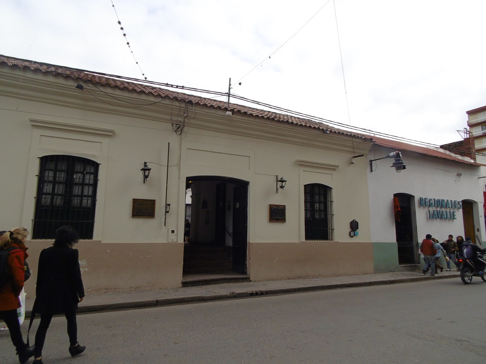
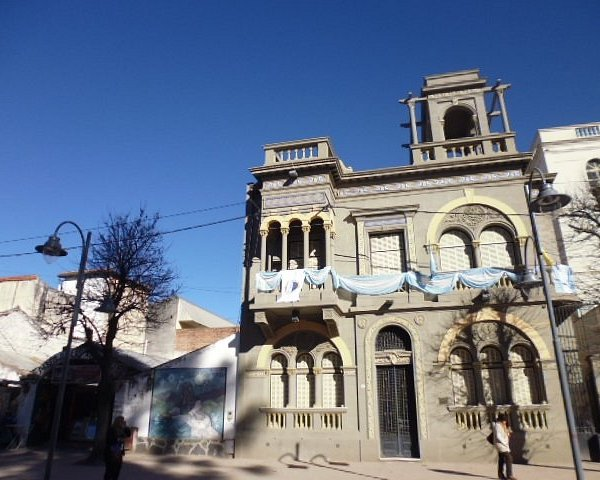

Cabildo de Jujuy
El Cabildo de Jujuy es uno de los edificios más representativos e históricos de la ciudad de San Salvador de Jujuy por su valor arquitectónico y patrimonial. Fue declarado Monumento Histórico Nacional por el Decreto 95.687/1941. Se encuentra ubicado en la esquina de las calles Belgrano y Sarmiento. En este edificio se firmó la histórica declaración de la independencia de la provincia y se llevaron a cabo importantes acontecimientos políticos y sociales.
Museo Histórico Provincial Juan Galo Lavalle

Este museo funciona en una casona colonial del siglo XVIII y alberga una valiosa colección de objetos históricos, documentos y mobiliario de la época. Es un espacio dedicado a la memoria de la provincia y a la difusión de su historia, con salas temáticas y exposiciones temporales.
Museo Arqueológico Provincial

El museo exhibe piezas arqueológicas que datan de miles de años, pertenecientes a las culturas originarias de la región. Entre sus colecciones destacan cerámicas, textiles, herramientas y restos óseos que permiten conocer la vida y costumbres de los pueblos prehispánicos de Jujuy.